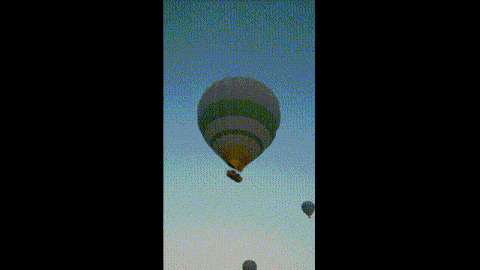
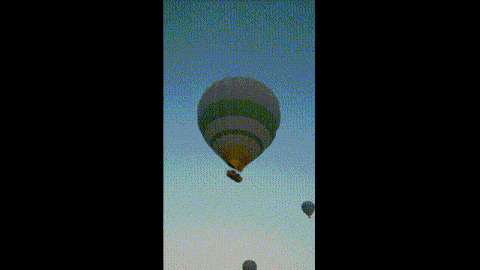

1.VJEŽBA - FontForge
Napravili smo svoj font!
2.VJEŽBA - Bezier
Uz pomoć Bezierovih krivulja smo nacrtali unutrašnjost svojih inicijala te napravili samostalan zadatak.
3.VJEŽBA - swatch i reflektiranje
Definirali smo swatch i nacrtali smo cvijet pomoću rotacije, reflektiranja...
4.VJEŽBA - objekti
Spajali smo i odvajali objekte. Također smo koristili gradijent kako bi izgledalo što realističnije.
Projektni zadatak na kojem smo pokazali što smo naučili do sad.
5. VJEŽBA - retuširanje
Sa slika smo micali "šumove".
6. VJEŽBA - koloriranje
Kolorizacija putem kanala.
7. VJEŽBA - fotomontaža
Konbinirali smo više fotografija kako bi stvorili ovu vježbu. Također naučili smo raditi realistične sjene.
Uz svoje fotografije i fotografije koje su bile zadane, stvorila sam sliku uz korištenje alata poput izrezivanja/selektiranja...
 
 

8.VJEŽBA - montaža kinemagrafa
U videu smo odabrali jedan element koji će se normalno micati dok su ostali stopirani.
9.VJEŽBA - video montaža
Osnove uređivanja videa.
10./11.VJEŽBA - izrada web stranice u html i css jezicima
Osnove izrade web stranice.